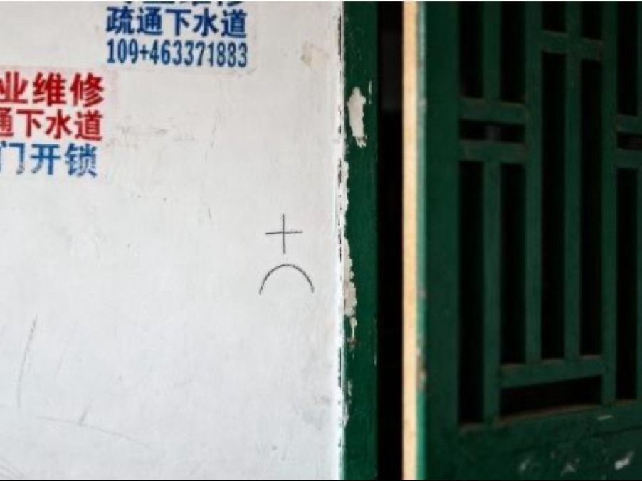

最近老听到有人用“伪科学”这个词。为什么科学解释不了的东西就是伪科学呢？我觉得应该归类到“超自然现象”。
警告：此页内容请通过电脑端查看
（这里是小字占位符，可填写额外信息）

最近老听到有人用“伪科学”这个词。为什么科学解释不了的东西就是伪科学呢？我觉得应该归类到“超自然现象”。
楼主，不是科学解释不了的就是超自然！伪科学是假装自己是科学，其实根本没啥根据，就是忽悠人的。
你看那些“高人”、“大师”，绝大多数都是伪科学，别瞎信就对了。
不对吧，比如 “气” 还是有科学依据的。这和经络、人体磁场都有关系。
再说老祖宗早就说了，"炁始而生化，炁散而有形"，是生命的原动力！练气功的人能用意念控制身体，甚至还能治病。我们应该好好研究一下 “气”，说不定能发现新的科学。
楼上的论调就充分说明了伪科学的存在
1 1 12
20 2 10
9 1 4
17 2 1
12 1 9
27 1 13
6 1 11
10 1 28
2 2 1
25 2 6
啥玩意儿？怎么突然冒出来一个未知用户？
这是不是他自己披的马甲？那我还叫“已取消用户“呢！
他发那串数字是啥意思，偶要照着这个号码买彩票
可能就是随便按着玩的。别扯远了
就算不提伪科学，我还是觉得无法解释的所谓超自然力量也是科学的一种，只不过现在的科学无法解释罢了。
你要聊超自然我可就来兴致了，什么麦田怪圈 百慕大三角 第三类接触，我觉得科学解释不了的现象多了去了！
保留意见。就像那个《奔向科学》那一期，说监控拍到了“飞棍”，还说可能是外星人的交通工具！
结果看到最后，其实是只大扑棱蛾子，被抓拍成了那样而已。
超自然现象的绝大多数都是自己吓自己
哈哈哈，顶一个 那期我也看了，看到最后就一个字：汗！
奔向科学里的故事还是跟真正的超自然现象有区别的吧。就像【风火老法师】网友提到的麦田怪圈，那些神秘的象形符号，用科学能解读吗？
说到象形符号，我家楼道里最近也出现了一些莫名其妙的符号。比如这个，有谁知道是什么意思吗？
楼上的还是注意点吧，这个很像小偷踩点的标志……
怎么突然好吓人 路过
你们有过突然回过神，发现眼前的场景和曾经做过的梦一样，这种经历吗？
梦里的场景基本醒来就会忘，但是之后的某天某一时刻，却突然意识到现在经历的就是曾经梦到的景象
这个也算是超自然吧，不过我对和梦有关的不感兴趣。lz可能爱听
天啊，我真的经历过。17楼有什么经历吗？详细讲讲
其实，现在这个帖子的内容就和我曾经做过的一个梦一样。
虽然大部分都忘得差不多了，但也是我一个人坐在家里的电脑前，偶然看到一篇讨论伪科学和超自然的帖子，点进去后没多久就看到一个莫名其妙的人发了一堆数字
怎么变成悬疑帖了？好有意思
呵呵。。。
那你在梦里弄清楚那些数字是什么意思了吗？
记不太清了，但我记得醒的时候还有点兴奋，应该是解开了。
不过，梦里出现的数字和5楼发的格式不太一样。我记得是在每行第一个数字后有个F
这样？
1F 1-12
20F 2-10
9F 1-4
17F 2-1
12F 1-9
27F 1-13
6F 1-11
10F 1-28
2F 2-1
25F 2-6
对，是这样的。具体数字我完全记不清了，所以没法说跟5楼发的是不是一样。
我家人回来了，下线了，88
越聊越离奇了，我这个帖子是不是就够奔向科学拍3集的
版主快联系节目组吧，看看他们能推理出来什么，哈哈~
世界上未知的事物太多了，经过时间的验证，一切皆会有答案